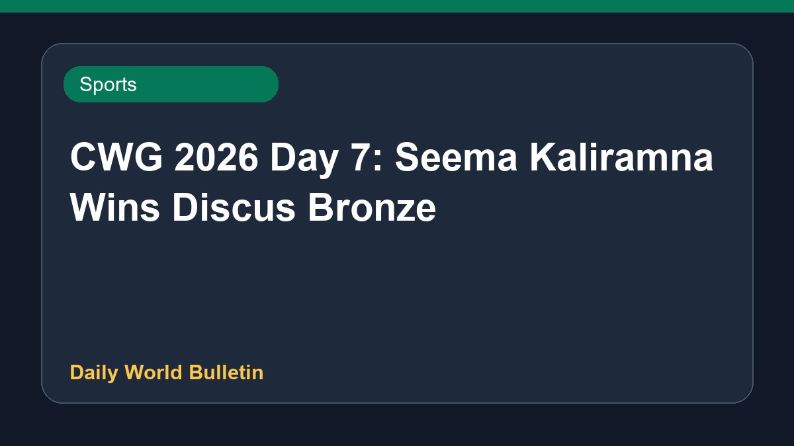

CWG 2026 Day 7: Seema Kaliramna Wins Discus Bronze

On day seven of the Commonwealth Games 2026, Indian athlete Seema Kaliramna secured a bronze medal in the women's discus throw event, completing a remarkable journey from academia and motherhood to the podium. Meanwhile, Lovepreet Singh concluded the national weightlifting campaign. In other athletics results, Parul Chaudhary finished in the thirteenth position. Further details regarding the events remain limited according to the updates.
Original source: Sports News Sources
India at Commonwealth Games 2026, Day 7: Lovepreet Singh wraps up weightlifting; Seema Kaliramna earns bronze - as it happened - olympics.com ↗
India at Commonwealth Games 2026, Day 7: Lovepreet Singh wraps up weightlifting; Seema Kaliramna earns bronze - as it happened - olympics.com ↗